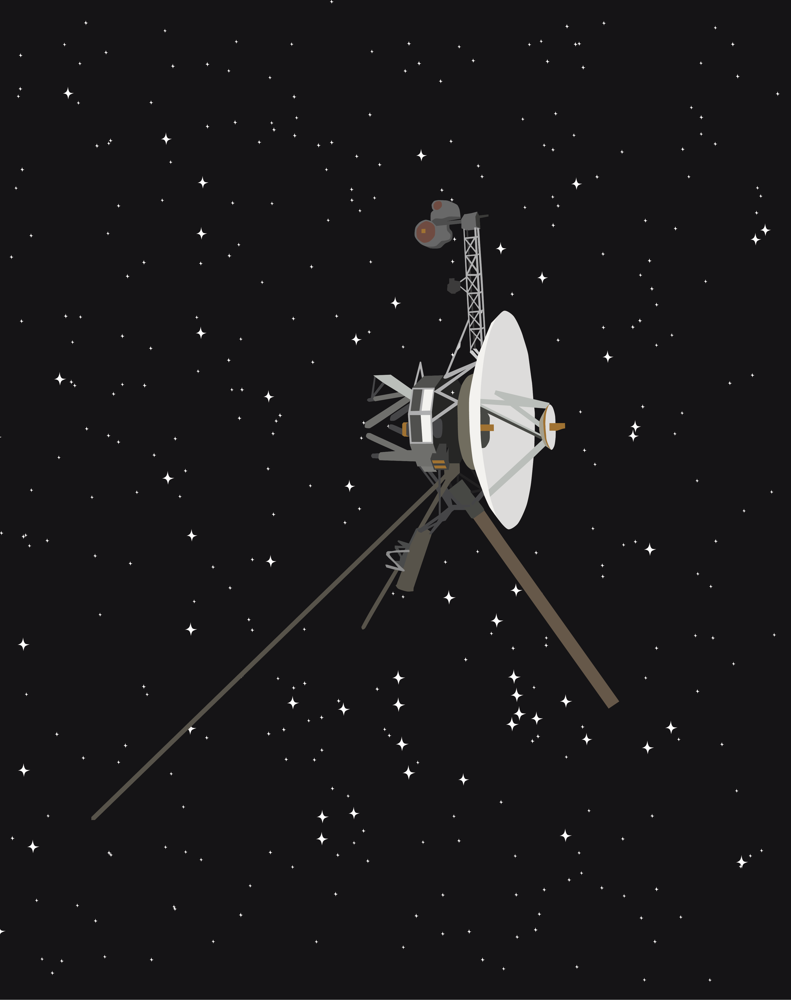

Nguyễn Bình (they/them)
Graduate Student in Astronomy, University of Washington
Graduate Student in Astronomy, University of Washington
I am Nguyễn Bình (IPA: [ŋwiən˦ˀ˥ ʔɓïŋ˨˩]), a graduate student in the Astronomy
PhD program at the University of Washington. I received my BSc in Astronomy and BA in
Linguistics in May 2023.
I am a native of Hanoi, Vietnam. Being born in such an old and historic city has
inevitably inspired in me an undying affinity for culture. I carry my culture everywhere
I go, quoting Vietnamese folk songs in my writings and thinking about the existential loneliness of
Bà Huyện Thanh Quan's poetry while stationed in an astronomical observatory on the mountains.
CV
I am a member of the COSMOS Collaboration, studying the formation
and evolution of galaxies in the COSMOS legacy field which is situated on the equatorial sky (most precisely
the Sextans constellation). My specific niche concerns massive, early Universe galaxies (around the mass of the Milky Way
but existing around 11.5 billion years ago) that are quiescent, i.e. having ceased star formation altogether. With the
help of my current advisor, Prof. Arianna Long (University of Washington),
I compiled an extensive sample of
massive quiescent galaxies in the early Universe, nicknamed SÔNG after the Vietnamese word for rivers. A false-color image
of one of the SÔNG galaxies can be found at the bottom of this page.
Most of my works before graduate school also concern galaxies and their environment. Between 2021 and 2022, I worked with
Prof. Gurtina Besla (University of Arizona) to understand
how the dark matter mass profiles and kinematics of ultra-faint dwarfs (UFDs) evolved across cosmic time, using high-resolution, zoom-in cosmological
simulations. UFDs are an interesting type of object which contains few stars but is dominated by dark matter. In Summer 2022,
I interned at the Space Telescope Science Institute, where I worked with Dr. Anna Wright (Flatiron Institute) and the
FOGGIE team to study the stellar halo of a Milky Way-mass galaxy
(that is, a galaxy as heavy as our Milky Way) in cosmological simulations.
Anyway, below is an animation showing how the dark matter distribution of a simulated UFD evolves from
high to low redshifts. The contour plots used for this animation were generated by my research code.
Growing up in a light-polluted Southeast Asian country where astronomy remains underdeveloped, I view public outreach as a potential tool to encourage more aspiring astronomers from minoritized communities and help the field prosper. Therefore, in Vietnam, I am a frequent contributor to Tia Sáng, the official magazine of the Ministry of Science and Technology, and my articles in the magazine focus on topics in astronomy which I think deserve more attention. In the most recent series of articles, I take a look at the debate around the current definition of galaxies and ask what it can tell us about the way in which science defines things. You can find a complete list of my published articles here.
Before and at the same time as my astronomy career, I am also a writer. In fact, between the ages of ten and twelve, long before my first exposure to professional astronomy, I published three novels in a series called Cuộc chiến với hành tinh Fantom [Battle with the Fantom Planet], which imagined a group of American teenagers dealing with an alien invasion from the eponymous planet. I am quite embarrassed by it now, but it is part of my past, and in my interviews at the time (examples can be found here and here), I said that I wanted to use the royalties to buy telescopes "to research the universe." Well, look where I am now! These days, my interests are deeper and more varied. I published some poetry, wrote some critical essays here and there, but am probably better known for my translation of the medieval Vietnamese novel-in-verse Truyện Kiều [The Tale of Kiều] into English, published in 2025 by Major Books. An English interview on my translation process and philosophy can be found here.
"Stars Over People: Patricio Guzmán’s Nostalgia from the Light”. Ultra Dogme.
June 2026. Online.
"The Windy Moors of Đà Lạt". The London Magazine.
February 2026. Online.
““America’s Literary Giant.” On the Legacy of Edgar Allan Poe in Vietnam”. Literary Hub.
October 2024. Online.
"Dover". The Common. Apr 2024. 203.
"Rest". Puerto del Sol. Dec 2023. 82.
"Two of the Graves by the Highway" & "Uncle". The Common.
May 2023. Online.
"First Lagrangian Point". Euphony Journal. Dec 2021.
Online.
